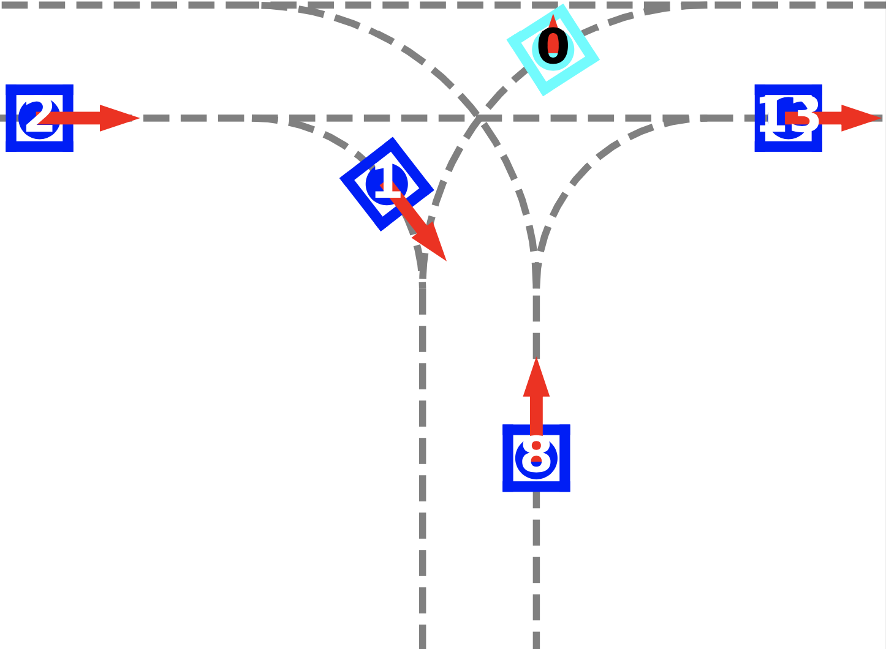

Xiaoyi (Sherry) Chen
Senior Robotics Software Engineer
Chef Robotics
I'm a Senior Robotics Software Engineer at Chef Robotics, where I develop intelligent robots for food manufacturing. I joined as an early engineer and have helped deploy 40+ robots to customer facilities worldwide, with our fleet making over 60 million meals in production.
My work spans the full robotics stack—from motion planning and control to behavior planning and machine learning. I'm passionate about building practical robotic systems that work reliably in real-world environments. I previously worked on autonomous vehicle planning at Nuro and completed internships at Facebook working on ML for content safety. My research on multi-agent interaction for autonomous vehicles was published at ICRA 2021.
I hold a Master's degree in Computer & Information Science and dual Bachelor's degrees in Electrical Engineering and Entrepreneurial Management from the University of Pennsylvania, where I graduated Summa Cum Laude from the Jerome Fisher Program in Management & Technology. During my undergraduate studies, I led the development of S.S.MAPR, an autonomous water quality sampling robot that won the Grand Prize at the Cornell Cup competition and was featured at Hackaday SuperConference.
Professional Experience
San Francisco, CA
Senior Robotics Software Engineer | Jan 2025 - Present
Robotics Team Lead | Jul 2023 - Jan 2025
Robotics Software Engineer | Aug 2021 - Jul 2023
Robots for food manufacturing (Series A startup). Joined as early engineer. Deployed 40+ robots to customer facilities around the world. The robot fleet has made 60+ million deposits in production. Designed and implemented scheduling, behavior planning, motion planning, and control algorithms across the robotics stack (Python, C++, ROS).
Mountain View, CA
Robotics Software Engineer, Jul 2020 - Jul 2021
Software Engineer Intern, Jun 2019 - Aug 2019
Designed & implemented features for pedestrian interaction and cyclist interaction. Developed traffic rule scores for the ML planner. Integrated ML-learned pedestrian intent-to-cross signal. Fixed critical on-road safety issues which contributed to a key internal milestone.

Research & Publications

ICRA 2021
Developed an RL algorithm with attention mechanisms for vehicle-vehicle interaction in urban driving. Built simulator for systematic evaluation. Algorithm outperformed existing approaches in efficiency and safety.
IEEE Spectrum, March 2023
Conducted industry research and interviews to explore climate robotics opportunities.
Selected Projects
Implemented end-to-end imitation learning pipeline, using the ACT model, for a pick-and-place task. Achieved 90% success rate through iterative improvements. Built custom evaluation framework with stratified sampling and progress scoring to systematically analyze failure modes and improve generalization to out-of-distribution scenarios.

Built autonomous water quality sampling robot, partnered with USGS and Philadelphia Water Department. Designed complete autonomy stack, simulation, teleoperation, and hardware control systems.
Awards
May 2019
Grand Prize, Cornell Cup Embedded Systems Competition
Cornell University, Systems Engineering
With S.S.MAPR (team of 6).
Apr 2019
Judge's Choice Award, Senior Design
University of Pennsylvania, School of Engineering and Applied Science
With S.S.MAPR (team of 6).
May 2017
Wharton Innovation Fund - Grant Award
University of Pennsylvania, The Wharton School
With UCheck (team of 2).
Jan 2017
College House Research Fellowship - Grant Award
University of Pennsylvania
With UCheck (team of 2).
Entrepreneurship
SyntheticFi (YC W23), Advisor & Investor, 2025-Present
On Deck Founders Fellowship, Member, 2023
Grishin Robotics, Venture Scout, 2023-2024
UCheck, Founder, self-checkout app for urban grab-n-go stores. 2016-2018
.406 Ventures, Student Fellow, 2016-2018
Patents
System and/or method of cooperative dynamic insertion scheduling of independent agents, 2025 [link]
Interface system and/or method for refilling assembly systems, pending [link]
Education
University of Pennsylvania
The Jerome Fisher Program in Management & Technology, Aug 2015 - May 2020
GPA: 3.91/4.0, Summa Cum Laude
The Jerome Fisher Program in Management & Technology, Aug 2015 - May 2020
GPA: 3.91/4.0, Summa Cum Laude
- Master of Science in Engineering, Computer & Information Science
- Bachelor of Science in Engineering, Electrical Engineering
- Bachelor of Science in Economics, Entrepreneurial Management
Service
Journal peer review: IEEE RA-L, Journal of Electronic Imaging, Robotics and Autonomous Systems, IET Cyber-Systems and Robotics
Conference peer review: ICRA (2021, 2023, 2026), Conference on Decision and Control 2022
Workshop organizer: 2022 RSS Workshop on the transition between research and industry
Mentorship: Mentor for Women in Robotics, .406 Ventures
Website template from Jon Barron